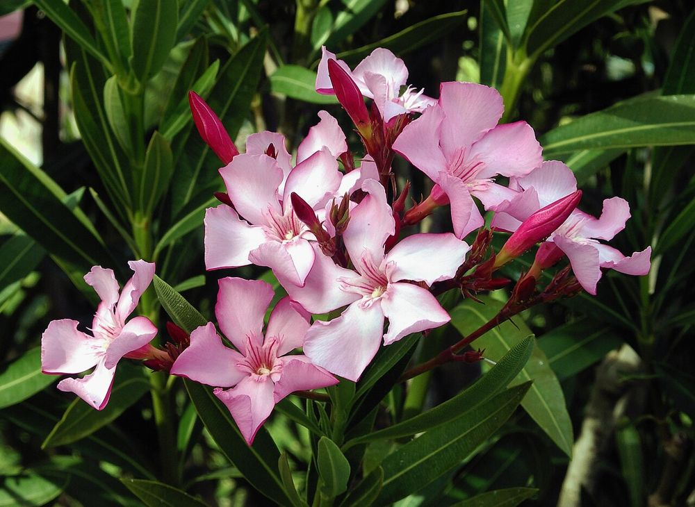

⚠️ எச்சரிக்கைக் குறிப்பு:
அரளி எந்த வகையிலும் வீட்டு மருத்துவத்துக்குப் பயன்படுத்தக் கூடாது. இலை, பூ, விதை எதையும் வாயில் வைக்கக் கூடாது. (குழந்தைகள், கால்நடைகள் அருகில் கவனம் தேவை. தவறுதலாக உட்கொண்டால் உடனே மருத்துவமனைக்குச் செல்லவும்.)
🌺 அரளி – உங்களுக்குத் தெரியுமா?
1அழகிய பூ, ஆபத்தான செடி
அரளியின் வேர் முதல் பூ வரை அனைத்துப் பாகங்களும் கடும் நச்சுத்தன்மை உடையவை. இதை எரித்த புகை கூட உடலுக்குத் தீங்கானது.
2நெடுஞ்சாலைகளின் காவலன்
வாகனப் புகை, வறட்சி, வெயில் அனைத்தையும் தாங்கி வளர்வதால், நெடுஞ்சாலை நடுத்தடுப்புகளில் அதிகம் நடப்படுகிறது.
3கால்நடைகள் தொடாத செடி
இதன் கசப்பு, நச்சுத்தன்மையால் ஆடு, மாடுகள் இதை இயல்பாகவே தவிர்க்கும். அதனால் உயிர்வேலியாகவும் வளர்க்கப்படுகிறது.
இந்தத் தகவல் பயனுள்ளதாக இருந்ததா?